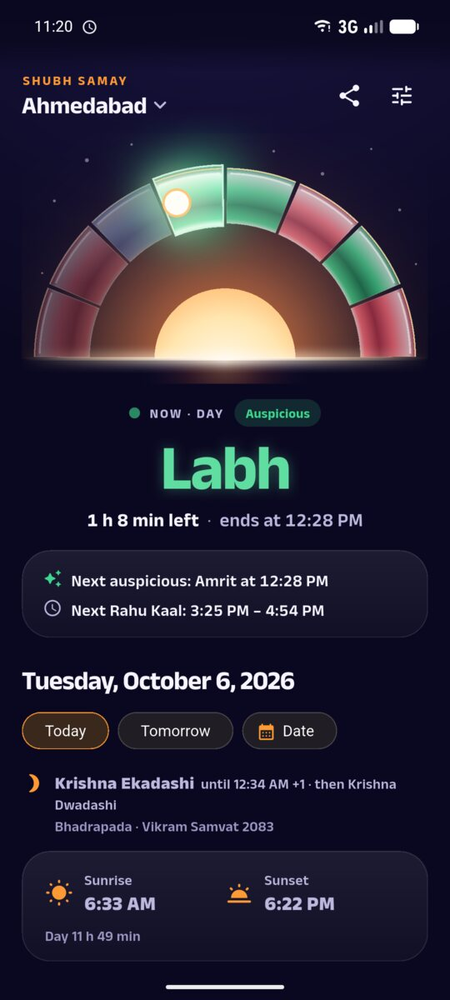
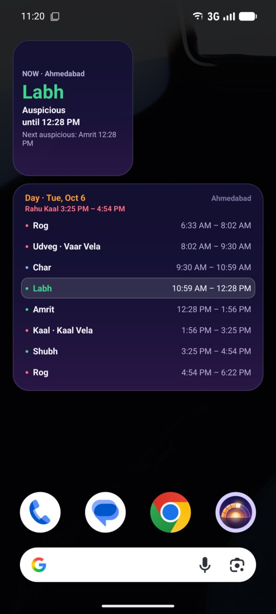

Shubh Samay · Android app
Choghadiya today, for your city
Shubh Samay shows which choghadiya is running now, when it ends and when the next auspicious one (Amrit, Shubh or Labh) begins, with Rahu Kaal, Yamaganda, Gulika, Abhijit and Brahma muhurat and today's tithi, for today or any date. Sunrise and sunset are calculated on your phone for your city, and every time is shown on its local clock, in India or abroad.
- Works offline
- No ad before the timings
- One-time Pro, no subscription
- English · हिन्दी · ગુજરાતી


What's inside
- Day and night choghadiya, the running one highlighted, with Vaar Vela, Kaal Vela and Kaal Ratri.
- Rahu Kaal, Yamaganda and Gulika Kaal, with a warning while Rahu Kaal is running.
- Today's tithi with its end time, the Hindu month and the Vikram Samvat year.
- 100+ built-in cities in India and abroad (London, New Jersey, Toronto, Dubai…), your phone's location or typed coordinates.
- Daylight saving time handled for cities abroad.
- Checked to the minute against a published panchang, over 37 days in 7 cities (London included).
- A free home screen widget: the running choghadiya, when it ends and the next auspicious one.
- Pro (one-time purchase, 7-day free trial): the full-day timeline widget, Rahu Kaal and choghadiya alerts, no ads.
हिन्दी · ગુજરાતી
आज का चौघड़िया, राहु काल और शुभ मुहूर्त, आपके शहर के सूर्योदय और सूर्यास्त के अनुसार। ऐप हिन्दी में भी है।
આજના ચોઘડિયા, રાહુ કાળ અને શુભ મુહૂર્ત, તમારા શહેરના સૂર્યોદય અને સૂર્યાસ્ત મુજબ. એપ ગુજરાતીમાં પણ છે.
How it is calculated
Sunrise and sunset follow the convention of most Indian panchangs (upper edge of the Sun, standard refraction). Day and night are each divided into 8 equal choghadiya in the traditional weekday order. Shubh Samay shows traditional timings for information only and makes no predictions.
Legal
Read the privacy policy. Questions: contact@sillapps.com